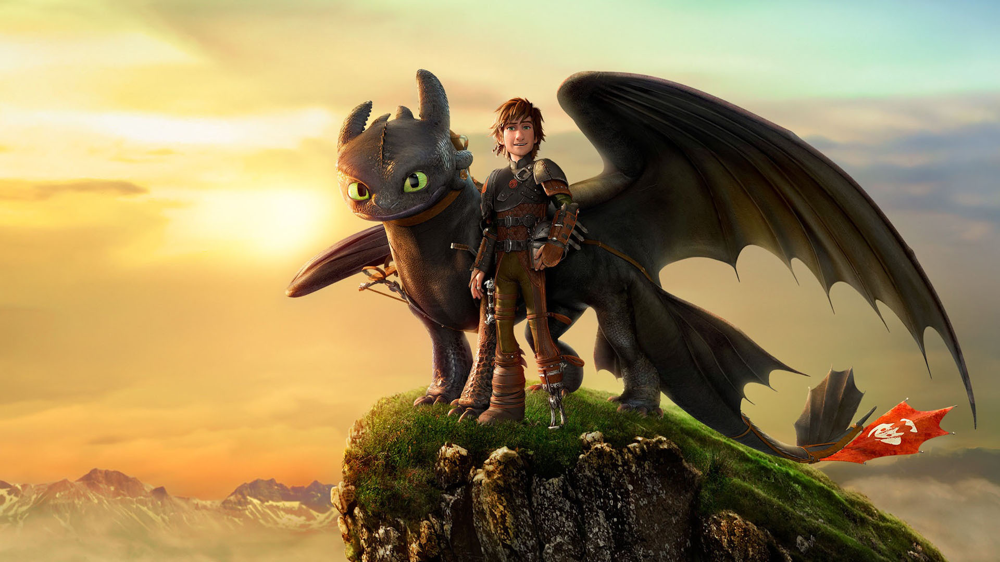
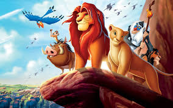
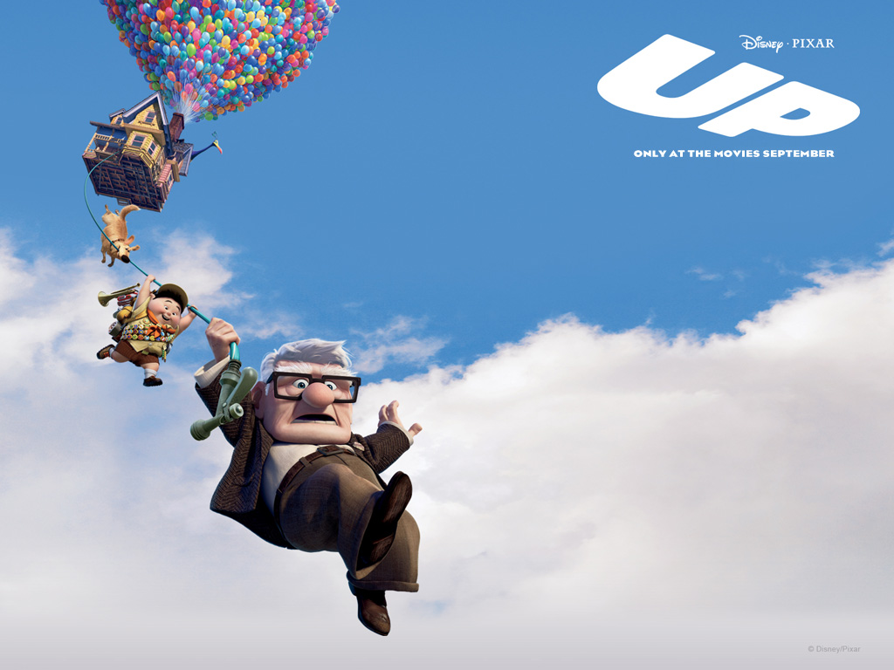
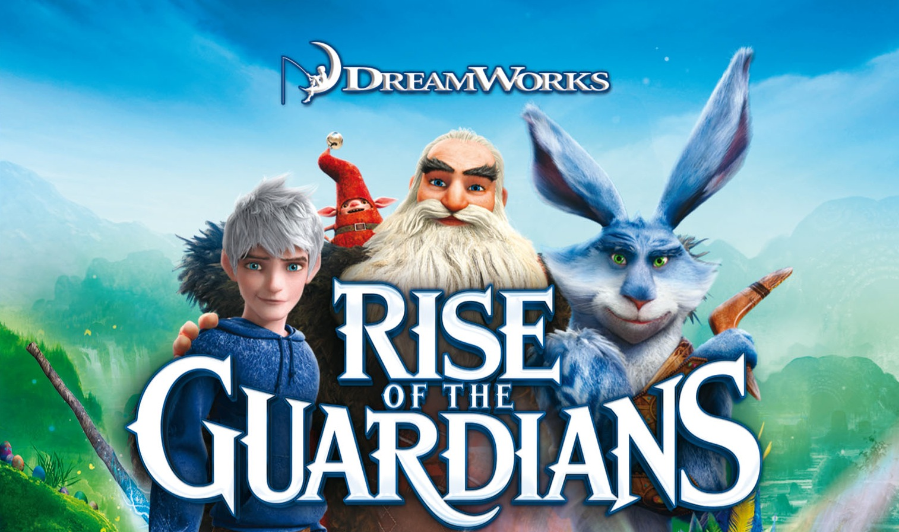
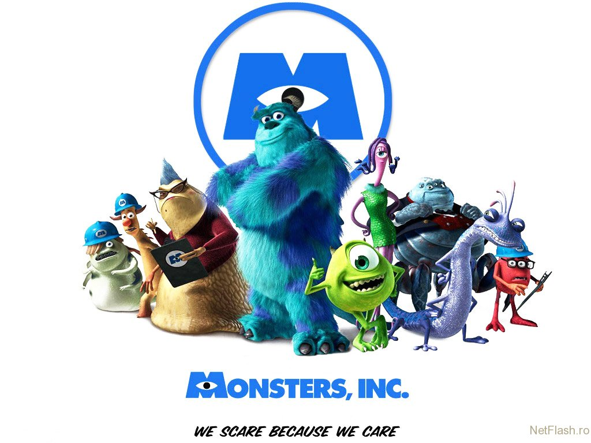
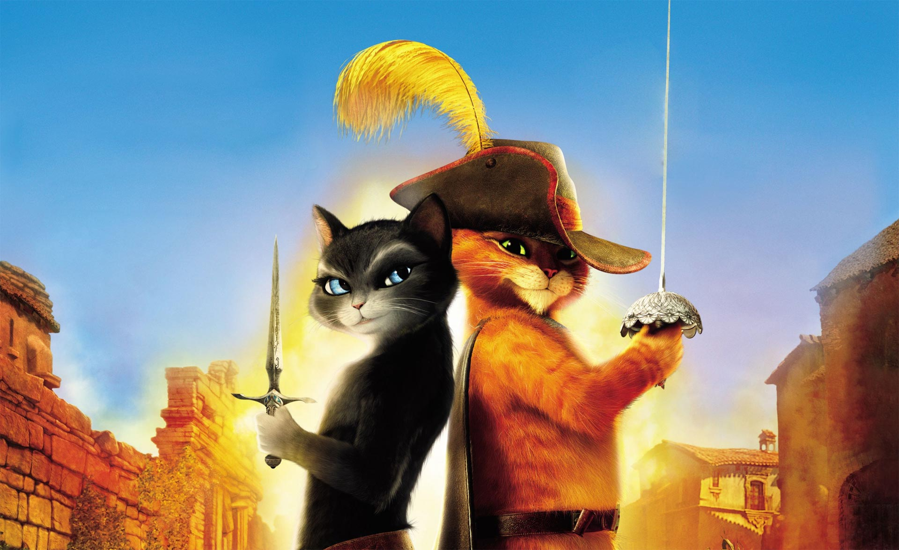
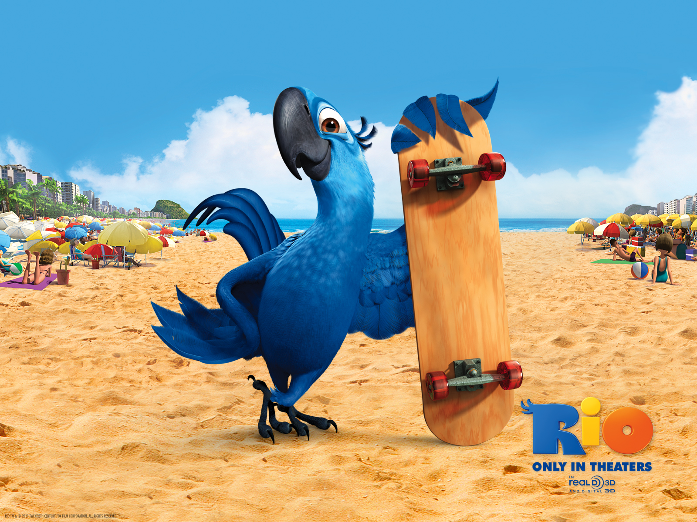
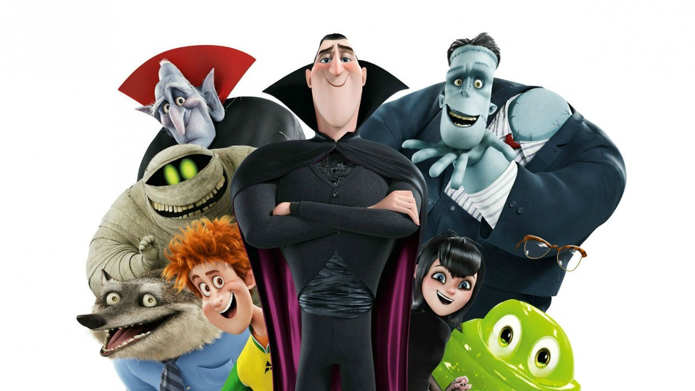
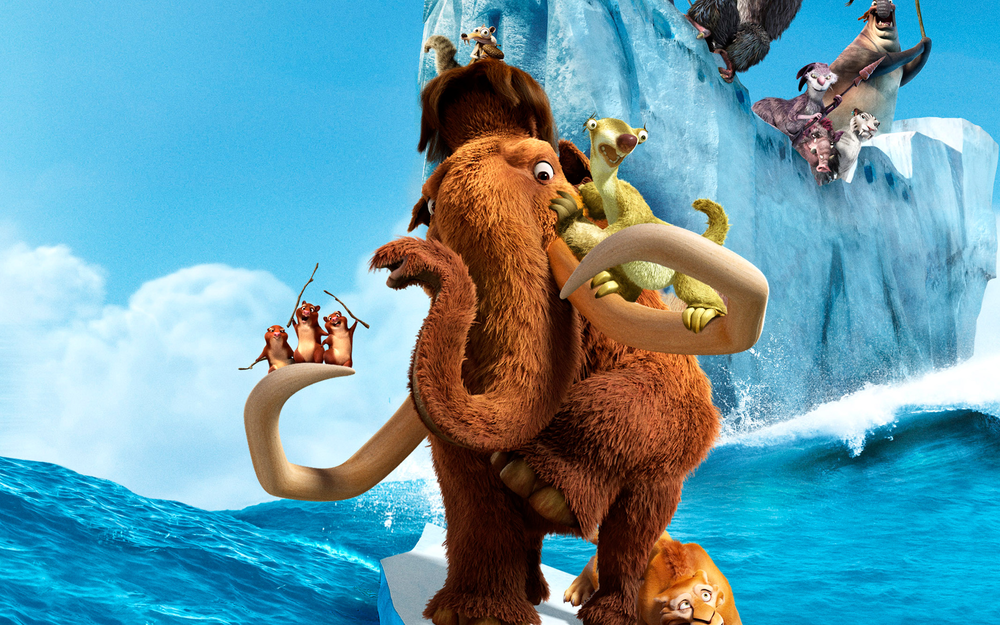
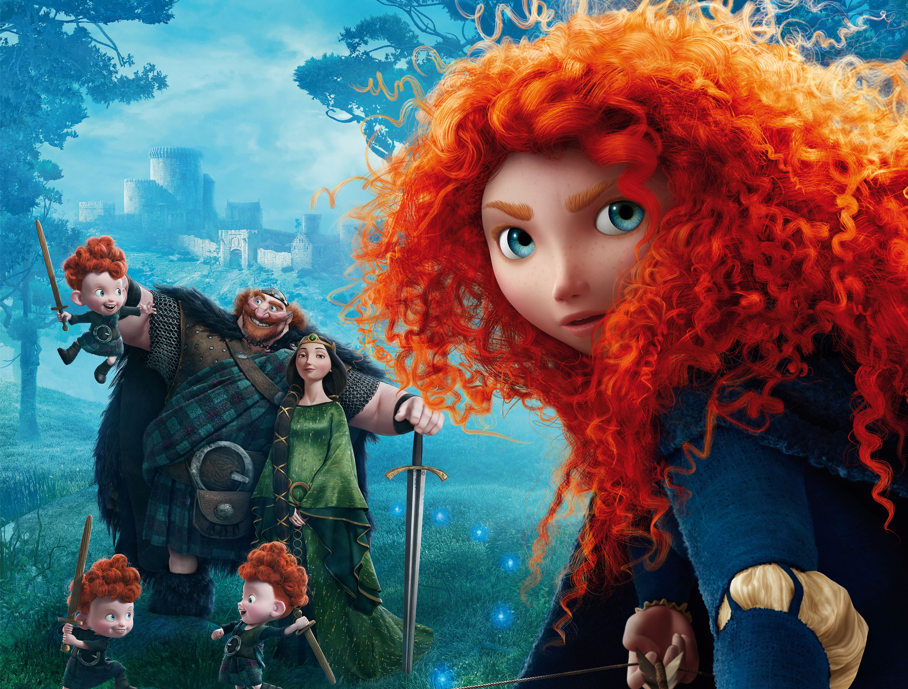

Top 10 cartoons
-
How to Train Your Dragon (2010)
×How to Train Your Dragon is a 2010 American 3D computer-animated action-fantasy film produced by DreamWorks Animation and distributed by Paramount Pictures.1 Loosely based on the British book series of the same name by Cressida Cowell, the film was directed by Chris Sanders and Dean DeBlois, the duo who directed Disney's Lilo & Stitch. It stars the voices of Jay Baruchel, Gerard Butler, Craig Ferguson, America Ferrera, Jonah Hill, T.J. Miller, Kristen Wiig, and Christopher Mintz-Plasse. The story takes place in a mythical Viking world where a young Viking teenager named Hiccup aspires to follow his tribe's tradition of becoming a dragon slayer. After finally capturing his first dragon, and with his chance at last of gaining the tribe's acceptance, he finds that he no longer wants to kill it and instead befriends it. The film was released March 26, 2010, and was a critical and commercial success, earning acclaim from film critics and audiences and earning nearly $500 million worldwide. It was nominated for the Academy Award for Best Animated Feature and Best Original Score at the 83rd Academy Awards, but lost to Toy Story 3 and The Social Network, respectively. The movie also won ten Annie Awards, including Best Animated Feature. A sequel, How to Train Your Dragon 2, was written and directed by Dean DeBlois and released on June 13, 2014, and was also universally acclaimed and a box office success. A second sequel, How to Train Your Dragon 3 is to be released on June 29, 2018. The film's success has also inspired other merchandise, including a video game and a TV series.
-
The Lion King (1994)
×The Lion King is a 1994 American animated epic musical film produced by Walt Disney Feature Animation and released by Walt Disney Pictures. It is the 32nd animated feature in the Walt Disney Animated Classics series. The story takes place in a kingdom of lions in Africa, and was influenced by William Shakespeare's Hamlet. The film was produced during a period known as the Disney Renaissance. The Lion King was directed by Roger Allers and Rob Minkoff, produced by Don Hahn, and has a screenplay credited to Irene Mecchi, Jonathan Roberts and Linda Woolverton. Its original songs were written by composer Elton John and lyricist Tim Rice, and original scores were written by Hans Zimmer. The film features an ensemble voice cast that includes Matthew Broderick, James Earl Jones, Jeremy Irons, Jonathan Taylor Thomas, Moira Kelly, Nathan Lane, Ernie Sabella, Rowan Atkinson, Robert Guillaume, Madge Sinclair, Whoopi Goldberg, Cheech Marin, and Jim Cummings.29, 2018. The film's success has also inspired other merchandise, including a video game and a TV series.
-
Up (2008)
×Up is a 2009 American 3D computer-animated comedy-drama adventure[3] film produced by Pixar Animation Studios and released by Walt Disney Pictures. Directed by Pete Docter, the film centers on an elderly widower named Carl Fredricksen (Ed Asner) and an earnest young Wilderness Explorer named Russell (Jordan Nagai). By tying thousands of balloons to his home, 78-year-old Carl sets out to fulfill his dream to see the wilds of South America and to complete a promise made to his late wife, Ellie. The film was co-directed by Bob Peterson, with music composed by Michael Giacchino.
-
Rise of the Guardians (2012)
×Rise of the Guardians is a 2012 American 3D computer-animated fantasy film based on William Joyce's The Guardians of Childhood book series and The Man in the Moon short film by Joyce and Reel FX Creative Studios. Peter Ramsey directed the film, while Joyce and Guillermo del Toro were executive producers with voice acting by Chris Pine, Alec Baldwin, Hugh Jackman, Isla Fisher, and Jude Law. Produced by DreamWorks Animation and distributed by Paramount Pictures,1 it was released on November 21, 2012 and received mixed to positive reviews, but under-performed at the box office, contributing to a studio writedown of $83 million for the quarter and the layoffs of 350 employees.
-
Monsters, Inc (2001)
×Monsters, Inc. is a 2001 American computer-animated comedy film directed by Pete Docter, produced by Pixar Animation Studios, and released by Walt Disney Pictures. John Lasseter and Andrew Stanton both served as executive producers. The film was co-directed by Lee Unkrich and David Silverman and stars the voices of John Goodman, Billy Crystal, Steve Buscemi, James Coburn and Jennifer Tilly.
-
Puss in Boots (2011)
×Puss in Boots is a 2011 American 3D computer-animated fantasy action comedy film produced by DreamWorks Animation and distributed by Paramount Pictures.1 It was directed by Chris Miller (who directed Shrek the Third in 2007), executive produced by Guillermo del Toro, and written by Brian Lynch, with screenplay by Tom Wheeler. It stars Antonio Banderas, Salma Hayek, Zach Galifianakis, Billy Bob Thornton and Amy Sedaris. The film was released in theaters on October 28, 2011 in Digital 3D and IMAX 3D.
-
Rio (2011)
×Rio is a 2011 American 3D computer-animated musical adventure-comedy film produced by Blue Sky Studios and directed by Carlos Saldanha. The title refers to the Brazilian city of Rio de Janeiro,[4] where the film is set. The film features the voices of Jesse Eisenberg, Anne Hathaway, will.i.am, Jamie Foxx, George Lopez, Tracy Morgan, Jemaine Clement, Leslie Mann, Rodrigo Santoro, and Jake T. Austin.[5] It tells the story of Blu (Eisenberg), a male Spix's macaw who is taken to Rio de Janeiro to mate with a free-spirited female Spix's macaw, Jewel (Hathaway). The two eventually fall in love, and together they have to escape from being smuggled by Nigel (Clement), a cockatoo. The theme song, "Telling the World" was performed by Taio Cruz.
-
Hotel Transylvania (2012)
×Hotel Transylvania is a 2012 American 3D computer animated fantasy comedy film produced by Sony Pictures Animation. It was directed by Genndy Tartakovsky, and produced by Michelle Murdocca. The film features the voices of Adam Sandler, Andy Samberg, Selena Gomez, Kevin James, Fran Drescher, Steve Buscemi, Molly Shannon, David Spade, and CeeLo Green.
-
Ice Age (2002)
×Ice Age is a 2002 American computer-animated buddy comedy adventure film directed by Chris Wedge from a story by Michael J. Wilson. It was produced by Blue Sky Studios and distributed by 20th Century Fox. The film features the voices of Ray Romano, John Leguizamo, Denis Leary and Chris Wedge and was nominated at the 75th Academy Awards for best animated feature. It shows the adventures of a sloth named Sid, a mammoth named Manny and a few other animals when the Earth was being flooded with glaciers.
-
Brave (2012)
×Brave is a 2012 American 3D computer-animated fantasy film produced by Pixar Animation Studios and released by Walt Disney Pictures. It was directed by Mark Andrews and Brenda Chapman, and co-directed by Steve Purcell. The story is by Chapman, with the screenplay by Andrews, Purcell, Chapman and Irene Mecchi. Chapman drew inspiration from her relationship with her own daughter. Chapman became Pixar’s first female director of a feature-length film. The film was produced by Katherine Sarafian, with John Lasseter, Andrew Stanton and Pete Docter as executive producers. The film's voice cast features Kelly Macdonald, Julie Walters, Billy Connolly, Emma Thompson, Kevin McKidd, Craig Ferguson, and Robbie Coltrane. To create the most complex visuals possible, Pixar completely rewrote their animation system for the first time in 25 years. It is the first film to use the Dolby Atmos sound format.